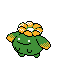

#188 SKIPLOOM

TYPE:
PLANT / FLYING
Pokédex Description
Pokémon Gold / Silver:
The flower on its head opens and closes as the temperature rises or falls.
Pokémon Crystal:
As soon as the first drops fall, it closes the flower and takes cover under a tree to avoid getting wet.
Base Stats
| Health | Attack | Defense | Speed | At. Esp. | Def. Esp. |
|---|---|---|---|---|---|
| 55 | 45 | 50 | 80 | 45 | 65 |
Max Stats Level 50
| Health | Attack | Defense | Speed | At. Esp. | Def. Esp. |
|---|---|---|---|---|---|
| 115 - 161 | 50 - 96 | 55 - 101 | 85 - 131 | 50 - 96 | 70 - 116 |
Max Stats Level 100
| Health | Attack | Defense | Speed | At. Esp. | Def. Esp. |
|---|---|---|---|---|---|
| 220 - 313 | 95 - 188 | 105 - 198 | 165 - 258 | 95 - 188 | 135 - 228 |
Movements by Level
Level - Gold/Silver - Crystal - Attack - Type - Power - Precision - PP - Description
1 - 1 - SPLASH NORMAL - 0 - 100 - 40 - It has no effect.
1 - 1 - TACKLE NORMAL - 35 - 95 - 35 - Attack with your whole body.
1 - 1 - SYNTHESIS PLANT - 0 - 100 - 5 - Restores HP (varies over time).
1 - 1 - WHIP NORMAL - 0 - 100 - 30 - Lowers the enemy's DEFENSE.
5 - 5 - WHIP NORMAL - 0 - 100 - 30 - Lowers the enemy's DEFENSE.
5 - SYNTHESIS PLANT - 0 - 100 - 5 - Restores HP (varies over time).
10 - 10 - TACKLE NORMAL - 35 - 95 - 35 - Attack with your whole body.
13 - 13 - DUST POISON POISON - 0 - 75 - 35 - It can poison the enemy.
15 - 15 - PARALYZER PLANT - 0 - 75 - 30 - It can paralyze the enemy.
17 - 17 - SOMNIFER PLANT - 0 - 75 - 15 - It can put the enemy to sleep.
22 - 22 - DRAINERS PLANT - 0 - 90 - 10 - Steal enemy HP every turn.
29 - 29 - SPORAGODON PLANT - 0 - 85 - 40 - Reduces opponent's SPEED.
36 - 36 - MEGA DEPLETE PLANT - 0 - 40 - 100 - Remove half the damage.
1 - 1 - TACKLE NORMAL - 35 - 95 - 35 - Attack with your whole body.
1 - 1 - SYNTHESIS PLANT - 0 - 100 - 5 - Restores HP (varies over time).
1 - 1 - WHIP NORMAL - 0 - 100 - 30 - Lowers the enemy's DEFENSE.
5 - 5 - WHIP NORMAL - 0 - 100 - 30 - Lowers the enemy's DEFENSE.
5 - SYNTHESIS PLANT - 0 - 100 - 5 - Restores HP (varies over time).
10 - 10 - TACKLE NORMAL - 35 - 95 - 35 - Attack with your whole body.
13 - 13 - DUST POISON POISON - 0 - 75 - 35 - It can poison the enemy.
15 - 15 - PARALYZER PLANT - 0 - 75 - 30 - It can paralyze the enemy.
17 - 17 - SOMNIFER PLANT - 0 - 75 - 15 - It can put the enemy to sleep.
22 - 22 - DRAINERS PLANT - 0 - 90 - 10 - Steal enemy HP every turn.
29 - 29 - SPORAGODON PLANT - 0 - 85 - 40 - Reduces opponent's SPEED.
36 - 36 - MEGA DEPLETE PLANT - 0 - 40 - 100 - Remove half the damage.
Movements by MT/MO
MT/MO - Attack - Type - Power - Accuracy - PP - Description
MT02 - HEAD BLOW NORMAL - 70 - 100 - 15 - It drives the enemy back.
MT03 - DAMN??? ??? - ??? - 100 - 10 - It doesn't work the same with ghosts.
MT06 - TOXIC POISON - 85 - 100 - 10 - Poison that increases the damage.
MT10 - HIDDEN POWER NORMAL - Varies - 100 - 15 - The power varies depending on the POKÉMON.
MT11 - SUNNY DAY FIRE - 90 - 100 - 5 - Improved fire attacks 5 turns.
MT12 - SWEET AROMA NORMAL - 0 - 100 - 20 - Reduces enemy evasion.
MT13 - SNORING NORMAL - 40 - 100 - 15 - It is only used when you sleep.
MT17 - PROTECTION NORMAL - 0 - 100 - 10 - Thwart the attack. It can fail.
MT19 - GIGA-PLANT DRAIN ??? - 60 - 100 - 5 - Remove half the damage.
MT20 - Stamina NORMAL - 0 - 100 - 10 - Always leave 1 PS, at least.
MT21 - FRUSTRATION NORMAL - Varies - 100 - 20 - Based on the lack of loyalty.
MT22 - SOLAR RAY PLANT - 120 - 100 - 10 - 1st turn: Prepare 2nd turn: Attack
MT27 - REVERSE NORMAL - Varies - 100 - 20 - Attack based on loyalty.
MT32 - DOUBLE TEAM NORMAL - 0 - 100 - 15 - Improves evasion skill.
MT34 - WIG NORMAL - 0 - 90 - 15 - Causes confusion and raises ATTACK.
MT35 - SLEEPWALKER NORMAL - 0 - 100 - 10 - Attack randomly while you sleep.
MT40 - CURLO DEFENSE NORMAL - 0 - 100 - 40 - Improves the DEFENSE of the user.
MT44 - REST PSYCHIC - 0 - 100 - 10 - Sleep 2 shifts for full cure.
MT45 - ATTRACTION NORMAL - 0 - 100 - 15 - Fall in love with the opposite gender.
MO05 - FLASH NORMAL - 70 - 100 - 20 - Blinds the enemy and let down the precision.
MT03 - DAMN??? ??? - ??? - 100 - 10 - It doesn't work the same with ghosts.
MT06 - TOXIC POISON - 85 - 100 - 10 - Poison that increases the damage.
MT10 - HIDDEN POWER NORMAL - Varies - 100 - 15 - The power varies depending on the POKÉMON.
MT11 - SUNNY DAY FIRE - 90 - 100 - 5 - Improved fire attacks 5 turns.
MT12 - SWEET AROMA NORMAL - 0 - 100 - 20 - Reduces enemy evasion.
MT13 - SNORING NORMAL - 40 - 100 - 15 - It is only used when you sleep.
MT17 - PROTECTION NORMAL - 0 - 100 - 10 - Thwart the attack. It can fail.
MT19 - GIGA-PLANT DRAIN ??? - 60 - 100 - 5 - Remove half the damage.
MT20 - Stamina NORMAL - 0 - 100 - 10 - Always leave 1 PS, at least.
MT21 - FRUSTRATION NORMAL - Varies - 100 - 20 - Based on the lack of loyalty.
MT22 - SOLAR RAY PLANT - 120 - 100 - 10 - 1st turn: Prepare 2nd turn: Attack
MT27 - REVERSE NORMAL - Varies - 100 - 20 - Attack based on loyalty.
MT32 - DOUBLE TEAM NORMAL - 0 - 100 - 15 - Improves evasion skill.
MT34 - WIG NORMAL - 0 - 90 - 15 - Causes confusion and raises ATTACK.
MT35 - SLEEPWALKER NORMAL - 0 - 100 - 10 - Attack randomly while you sleep.
MT40 - CURLO DEFENSE NORMAL - 0 - 100 - 40 - Improves the DEFENSE of the user.
MT44 - REST PSYCHIC - 0 - 100 - 10 - Sleep 2 shifts for full cure.
MT45 - ATTRACTION NORMAL - 0 - 100 - 15 - Fall in love with the opposite gender.
MO05 - FLASH NORMAL - 70 - 100 - 20 - Blinds the enemy and let down the precision.
Pokédex Gold/Silver/Crystal By Professor Dog.